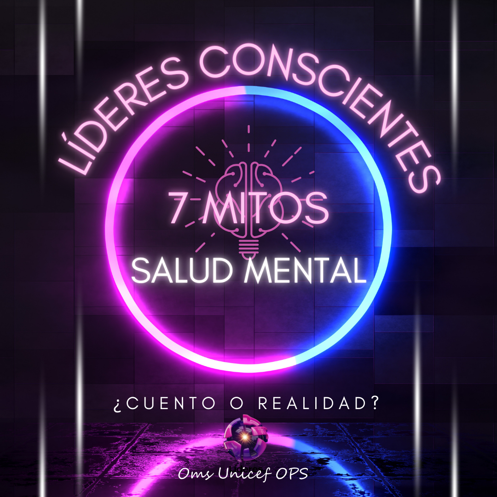
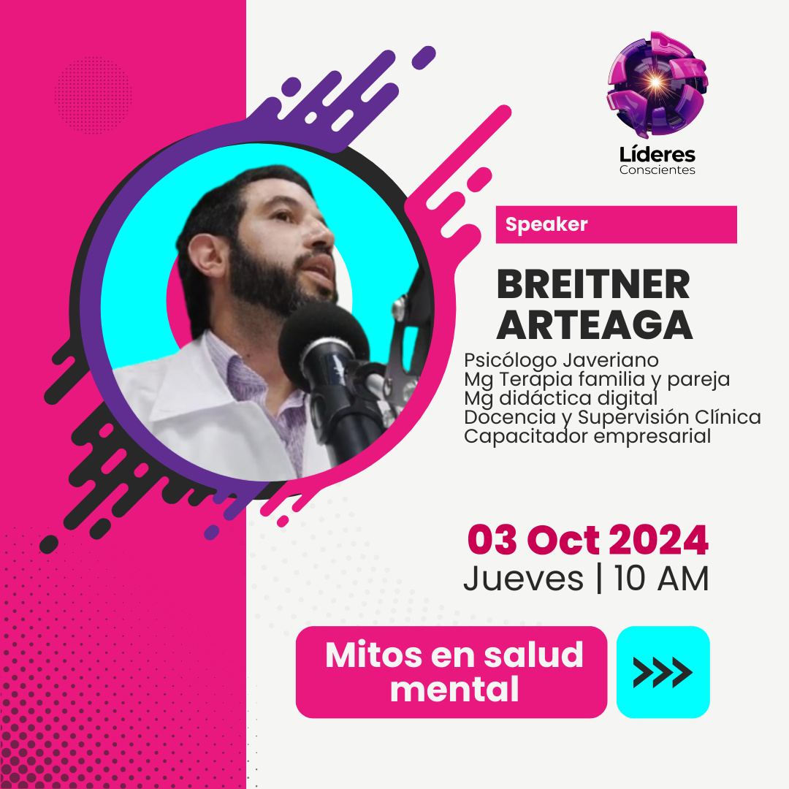
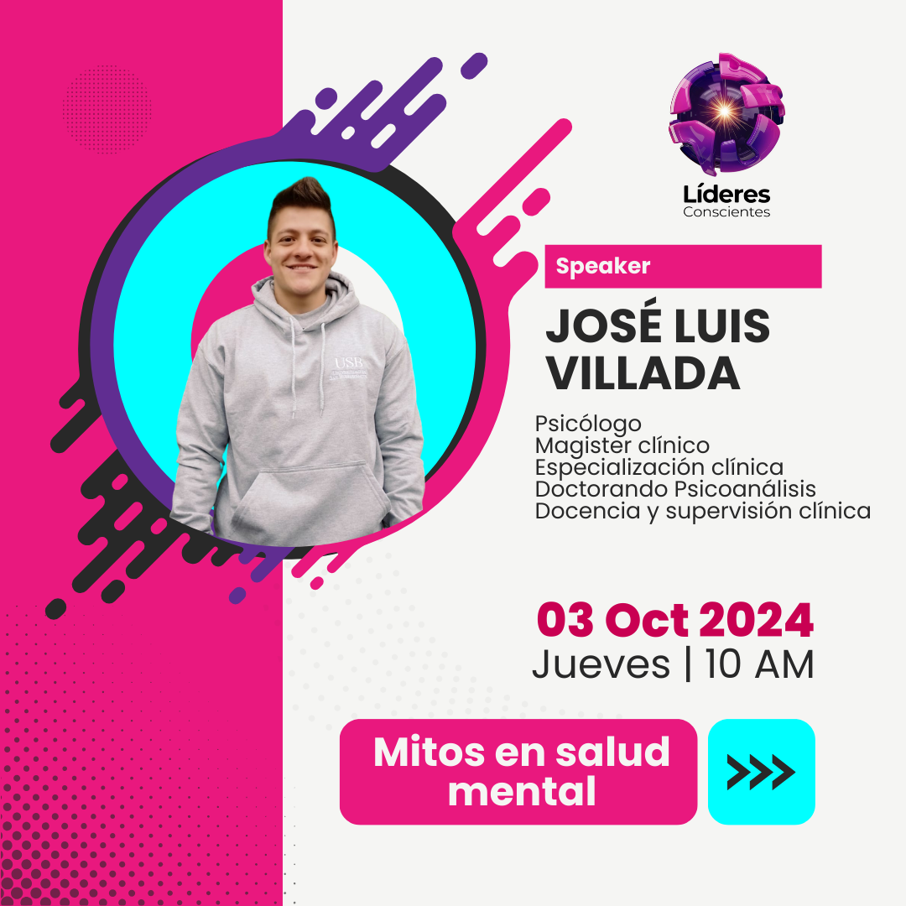
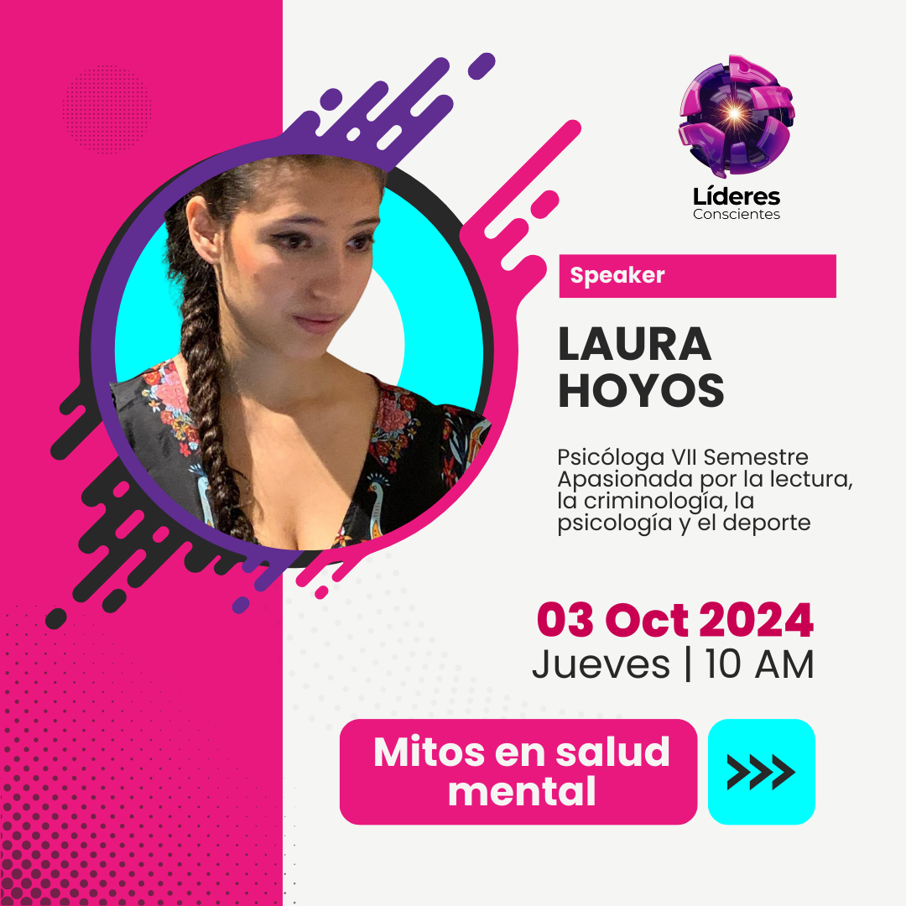

🔥Episodio#1
7 Mitos de la salud Mental (OMS/OPS/UNICEF)
¡Desmitifica la Salud Mental con Nosotros!
🚀¿Listo para una experiencia educativa única? Únete a nuestro programa de radio donde profesores de supervisión clínica y estudiantes de séptimo y octavo semestre abordan los siete mitos sobre la salud mental según la OMS.
🧠Desentrañaremos la línea entre cuento y realidad, ofreciendo un viaje informativo que combina ciencia y pasión.
Cada mito desafiado es una oportunidad para transformar percepciones. Nuestros estudiantes te brindarán perspectivas frescas desde su práctica clínica en hospitales, guiados por sus profesores.
📢¡Se trata de actuar! Conviértete en parte de nuestra misión de derribar mitos y construir un entendimiento más compasivo sobre la salud mental en nuestra comunidad.
✨¡No te pierdas esta oportunidad educativa! Sintoniza nuestro programa y acompáñanos hacia un futuro más saludable.
¡Te esperamos!
📑Descarga la presentación
👨🏼🎓Invitados
  🎧 ¡Escucha algo que transformará tu manera de pensar! 🎶
Sumérgete en este fascinante audio sobre Mitos en salud mental. Dale play y déjate inspirar. 🚀


.png)